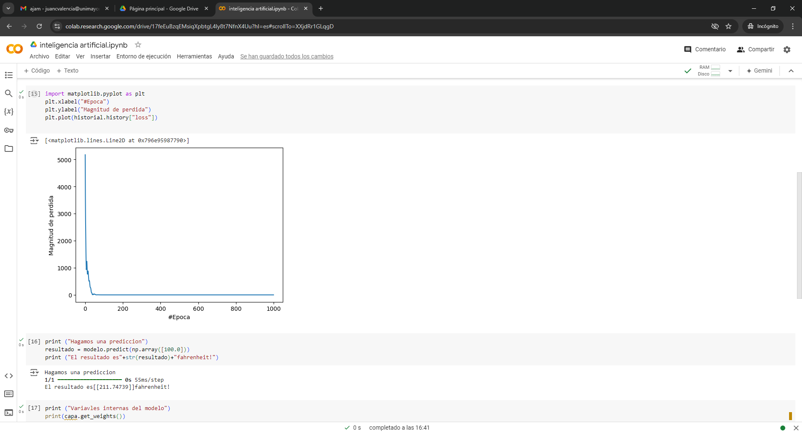
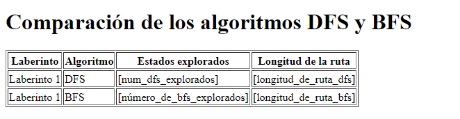
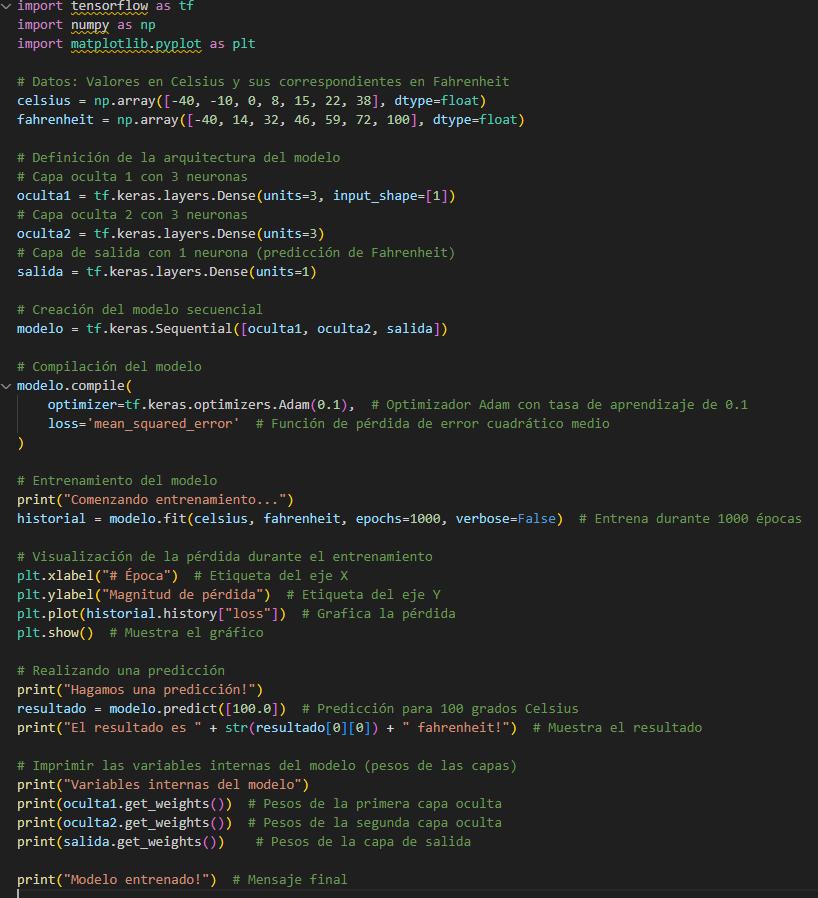

EN ESTA CLASE APRENDIMOS FUNDAMENTOS DE LA INTELIGENCIA ARTIFICIAL, ADEMAS APRENDIMOS GITHUB

vimos que datos se repetían y buscamos graficar de cierto que nos brindara dicha información en una grafica de pastel
Se agruparon las actividades que eran similares y se contaron manualmente
Elegimos la columna número 5 y sacamos las palabras repetidas con la ayuda de chatGPT y las rectificamos manualmente e hicimos lo mismo con las palabras únicas (que no se repetían) Luego último hicimos la suma de las palabras repetidas y también sacamos el número de palabras únicas y por último hicimos un gráfico circular 3D con los números de las palabras repetidas

INTELIGENCIA ARTIFICIAL APRENDIMOS ACERCA DE ESTE CONCEPTO: La inteligencia artificial es un campo de la ciencia relacionado con la creación de computadoras y máquinas que pueden razonar, aprender y actuar de una manera que normalmente requeriría inteligencia humana o que involucra datos cuya escala excede lo que los humanos pueden analizar.
El principio fundamental de la IA es replicar, y luego superar, la forma en que los humanos perciben y reaccionan ante el mundo. Se está convirtiendo rápidamente en la piedra angular de la innovación. La IA, impulsada por varias formas de machine learning que reconocen patrones en los datos para permitir predicciones
Aprendimos el concepto de algoritmos de busqueda onjunto de instrucciones que están diseñadas para localizar un elemento con ciertas propiedades dentro de una estructura de datos;

El dia Las redes neuronales son un tipo de modelo de aprendizaje automático inspirado en la estructura y función del cerebro humano. Estas redes están compuestas por capas de nodos o neuronas artificiales que se comunican entre sí a través de conexiones sinápticas. Al procesar grandes cantidades de datos, las redes neuronales pueden aprender patrones y relaciones complejas, lo que las hace ideales para tareas como el reconocimiento de imágenes, el procesamiento del lenguaje natural y la toma de decisiones.
Una de las características más importantes de las redes neuronales es su capacidad para aprender y mejorar con el tiempo. Esto se logra a través de un proceso llamado "entrenamiento", en el que la red neuronal se expone a grandes cantidades de datos y se ajusta para minimizar el error entre sus predicciones y los resultados reales. Una vez entrenada, la red neuronal puede ser utilizada para hacer predicciones y tomar decisiones en situaciones nuevas y desconocidas.
nos adentramos en el mundo de las, redes neuronales en Google Colab, explorando cómo aplicar redes neuronales desde un único punto de entrada ingresando valores. Este viaje comenzó con la comprensión de los conceptos fundamentales de las redes neuronales
El proceso de entrenamiento de una red neuronal implica la exposición a grandes conjuntos de datos, permitiendo que la red ajuste sus pesos y mejore su precisión en tareas específicas, como el reconocimiento de patrones o la clasificación de imágenes. A medida que avanzamos en este aprendizaje, es fundamental dominar no solo la teoría detrás de las redes neuronales, sino también la práctica de implementarlas en entornos como Google Colab, donde la accesibilidad y la potencia de procesamiento se combinan para facilitar la experimentación y la innovación en el campo del aprendizaje automático.
punto 3 del parcial captura
comente que hace cada línea de código de acuerdo al vídeo:
